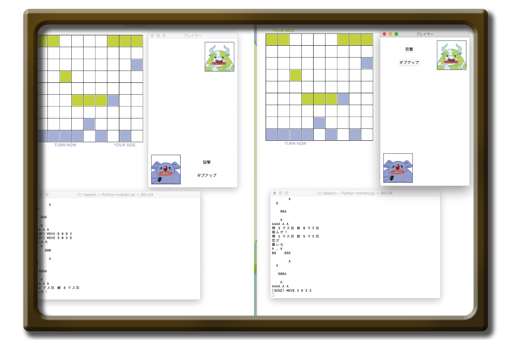
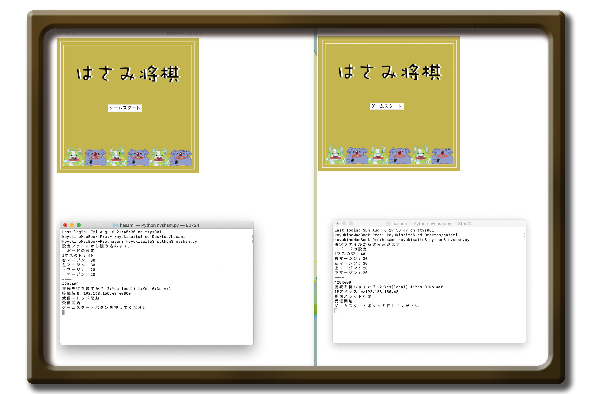
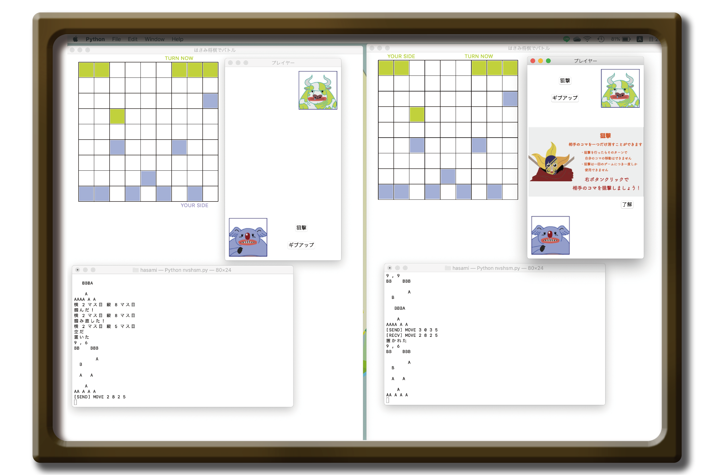
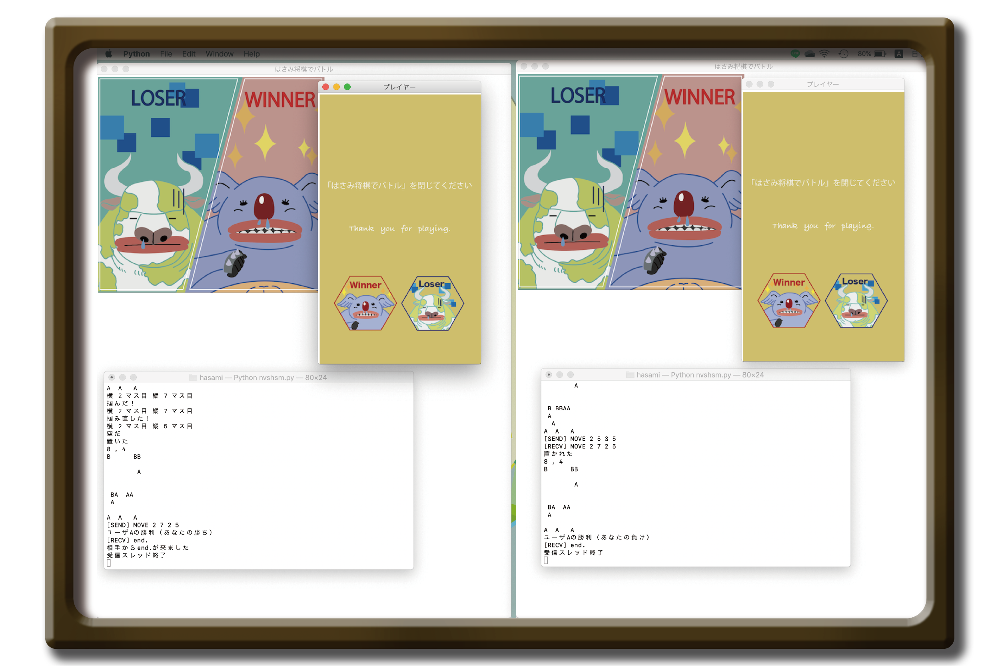

対戦型はさみ将棋
2020/6/4-2020/8/27
Programming
WebSocketを用いた対戦型はさみ将棋です。
Python Illustrator

2人のプレイヤーでゲームを開始します。
一方が駒を動かすともう一方の駒も反映して同じように動きます。駒は 上下左右に動かすことができ、斜めには動かすことはできません。 また、すでに駒が置いてあるマスには駒を置けず、駒を飛び越えて移動することも できません。1ターンごとにプレイヤーが交代します。

対戦中自分の持ち駒が相手の持ち駒より少ない場合に一度だけ自分のターンで相手の駒 を一つ選び狙撃し消すことができます。

相手の持ち駒を自分の持ち駒で挟んで消し、4個以下にすると勝利します。 また、自分からギブアップすることもできます。
工夫点
プレイヤー画面と対戦画面を作り、プレイヤー画面で狙撃ボタンを押した時のみ 対戦画面で狙撃が行えるようにしたり、勝負がつくと二つの画面で対戦が 終了するように連携させました。

©️ 2021 Koyuki Saito